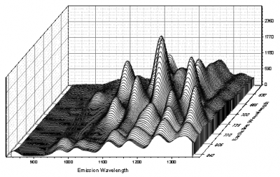
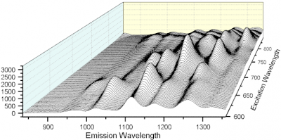

Originの ウォータフォール グラフは、グラフページ内に一連のプロットが後退するように、1つ以上のY列またはY列の範囲をプロットします。 このようなグラフは、いくつかのパラメータが増加するような条件下で収集されたデータセットを比較する場合に使用します。Originでは、2Dのウォータフォールも3Dのウォータフォールも、どちらもサポートしています。
|  |  |
| GDI-ベースの2Dウォータフォール グラフ | OpenGL‐ベースの3Dウォータフォール グラフ |
|---|
次の2つのモードでウォータフォールグラフを編集することができます。
最初のクリックでの編集モード(四角いハンドル)では、ページ上でレイヤの位置を移動したり、レイヤの大きさを変えたり、表示角度を変えることができます。 ハンドルの上でカーソルが両側矢印になったとき、グラフの座標は固定にしたまま、レイヤの大きさやウォーターフォールを囲む編集ボックス枠を定義している内部の角度を変更することができます。 マウスカーソルが4つの矢印で表示されているときに、ページ上でレイヤを移動することができます。
2回目のクリックでの編集モード(三角のハンドル)では、三角のハンドルの1つをドラッグして、長さやX軸の位置を変えずに表示角度を変更します(傾斜表示の変更)。 (三角のハンドルにマウスカーソルを合わせないで、ドラッグすると、レイヤがページ内で移動します。) プロットの傾斜は「作図の詳細」ダイアログボックス(「フォーマット：作図の詳細(レイヤ)」)の『ウォーターフォール』タブにあるXオフセットとYオフセットの値を編集しても変更することができます。
3D ウォータフォールは、壁の幅が0の特殊な3Dウォールグラフです。他の3Dグラフと同じように 回転、サイズの変更、拡張、傾斜の操作を行えます。
2Dと3Dのウォータフォールの両方について、グラフの線はYまたはZ方向に並んだカラーマップを使用出来ます。カラーマップウォータフォールグラフを作成する方法については2D ウォータフォール：Yカラーマップ、2D ウォータフォール：Zカラーマップ、3D ウォータフォール：Yカラーマップ、3D ウォータフォール：Zカラーマップを確認してください。
カラーマップのウォーターフォールグラフを作成した後、マッピングレベルと色を変更できます。変更できる項目はレベルの数、各レベルの色、カラーマップのテーマ等です。カラーマップ設定は同じですが、YカラーマッピングはY値を、ZカラーマッピングはZ値を使用します。前者はY値に応じて色を変化させ、後者はZ値の値に応じて色を変化させます。
ウォータフォールグラフでカラーマッピングの設定を行う詳細については、このページを参照してください。
3D ウォーターフォールでは、それぞれの線ごとにシンボルを追加できます。線と散布図のウォーターフォールを作成するには、3D ウォーターフォールグラフの作図の詳細ダイアログのシンボルタブでシンボルを編集します。シンボルサイズはゼロ以外に設定しなければなりません。シンボルのタイプと色は適用をクリックします。
接点のタイプ(直線、スプライン、ベジエ、Akima 等)を指定するには, フォーマット：作図の詳細（プロット属性）のパターンタブを開き、接続ドロップダウンを使用します。
2Dと3Dウォータフォールグラフの両方で、線のオフセットはワークシートラベル行で制御します。ワークシートラベル行で使用できるのは、ロングネーム、コメント、単位、サンプリング間隔、パラメータで、使用できるのは数値のみです。 Z値ソースドロップダウンからラベル行を選択して、ワークシートのZ値として使用する行を指定します。2Dウォータフォールでは、作図の詳細ダイアログのウォータフォールタブに、3Dウォータフォールでは作図の詳細ダイアログのその他の3Dオプションタブにこのドロップダウンリストが表示されます。
プロットの順序を変更すると、ウォータフォールグラフは後ろから前に向かって描画されます。
2Dウォータフォールグラフでは作図の詳細ダイアログのウォータフォールタブに非表示の線を現すチェックボックスがあります。これは前面の描画によって隠された線を表示するかどうか指示します。
3Dウォータフォールでは、作図の詳細ダイアログの パターンタブ にある透過率を調整または塗りつぶしをなしにすると、背面にあるグラフの線も表示できます。